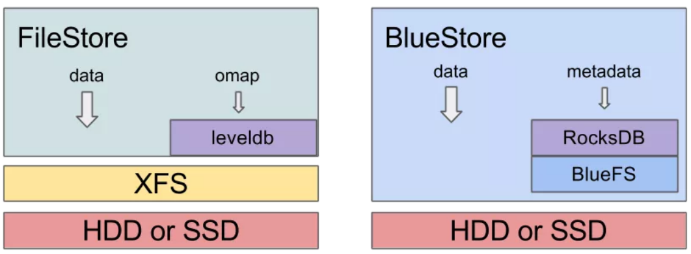

CEPH规划
背景
终于准备用Nautilus做生产环境了！
目前，Ceph 主要有三种企业级应用场景：
- IOPS 密集型：这种类型的场景通常是支撑在虚拟化/私有云上运行数据库。如在 OpenStack 上运行 Mysql、MariaDB 或 PostgreSQL 等。IOPS 密集型场景对磁盘的性能要求较高，最好使用全闪架构。如果使用混合架构，机械盘转速需要 1.2 万，并使用高速盘存储频繁写操作的日志或元数据。
- 高吞吐量型：这种类型的应用场景主要是大块数据传输，如图像、视频、音频文件等。高吞吐量型磁盘的要求没有 IOPS 密集型高，但需要配置较高的网络。同时也需要配置 SSD 来处理写日志。
- 高容量型：这种场景主要用于存储归档、离线数据。它对磁盘的容量要求高，对性能无过多要求。写日志也可以存储在 HDD 上。
此次计划部署一套带宽型的用来提供S3服务，所以部署第二种就好。
硬件规划：
nautilus采用blustore比filestore的性能大大提升，毕竟传输路径短了很多：

随之而来的问题是BlueStore 存储引擎的实现，需要存储数据和元数据。目前 Ceph BuleStore 的元数据存储在 RocksDB（K-V 数据库）中。通过为 RocksEnv 提供操作接口，RocksDB 存放在 BlueFS 上。由于 BlueFS 最终通过 RocksDB，承载的是 BlueStore 存储引擎中的元数据，因此它的性能会很大程度上影响整个 Ceph 的性能。所以，要为它提供高速硬盘。
Redhat建议，在新的bluestore架构下，如果用NVMe做metedata/jouranl，对应HDD的OSD是1：12；如果普通SSD做metedata/jouranl，则与HDD的比例为1：4 1
在此基础上，其他按照官方建议配置。
| Device | Size | Count | Use |
|---|---|---|---|
| CPU | Inter Xeon 6252 | 2 | |
| Memor | 32GB | ||
| DISK | 4TB | 12 | OSD |
| SSD | 480GB | 2 | Operation |
| NVMe | 4TB | 2 | blockk.db |
| Network | 10GB | 2 |
以上配置保证了：
1、每HDD的OSD至少对应5GB内存；
2、每2 GHZ CPU每0.5 Cores每HDD；
3、前端网络和后端网络的带宽，提供每12OSD有10GB带宽；
4、SSD组成raid1保证操作系统安全；
5、NVMe通过PCIE组成raid1，简化db磁盘损坏后的更换（此处不符合官方最佳实践）
共6台这样硬件配置的服务器，每台的作用如下：
| hostname | IP addr | Roles |
|---|---|---|
| rhcs01-st | 10.64.0.80 10.64.4.80 | OSD MONMGR |
| rhcs02-st | 10.64.0.81 10.64.4.81 | OSD RGWMDS |
| rhcs03-st | 10.64.0.82 10.64.4.82 | OSD MONMGR |
| rhcs04-st | 10.64.0.83 10.64.4.83 | OSD RGWMDS |
| rhcs05-st | 10.64.0.84 10.64.4.84 | OSD MONMGR |
| rhcs06-st | 10.64.0.85 10.64.4.86 | OSD RGWMDS |
软件计划：
确定使用RHCS4.1来部署，其与开源版本对应关系如下：
| Upstream Code Name | Downstream Release Name | Red Hat Ceph Storage Package Version (RHEL 8.x) | Red Hat Ceph Storage Package Version (RHEL 7.x) | Red Hat Ceph Ansible Package Version Release Month | |
|---|---|---|---|---|---|
| Nautilus Red Hat Ceph Storage 4.1 | 14.2.8-59.el8cp | 14.2.8-50.el7cp | ceph-ansible-4.0.23-1 | June, 2020 | |
| Nautilus | Red Hat Ceph Storage 4.0 | 14.2.4-125.el8cp | 14.2.4-51.el7cp | ceph-ansible-4.0.14-1 | January, 2020 |
而RHCS4支持的操作系统如下：
| Vendor | Version |
|---|---|
| Redhat Enterprise Linux | 8.28.1 |
| Redhat Enterprise Linux | 7.87.7 |
因此，系统选用RHEL8.2
小结
选定了软件版本后，按标准来配置即可。由于是分布式存储，主要还是考虑硬盘和网络，而硬盘的配置跟存储整个架构有很大关系。
参考文档：
https://access.redhat.com/documentation/en-us/red_hat_ceph_storage/4/html/hardware_guide/index